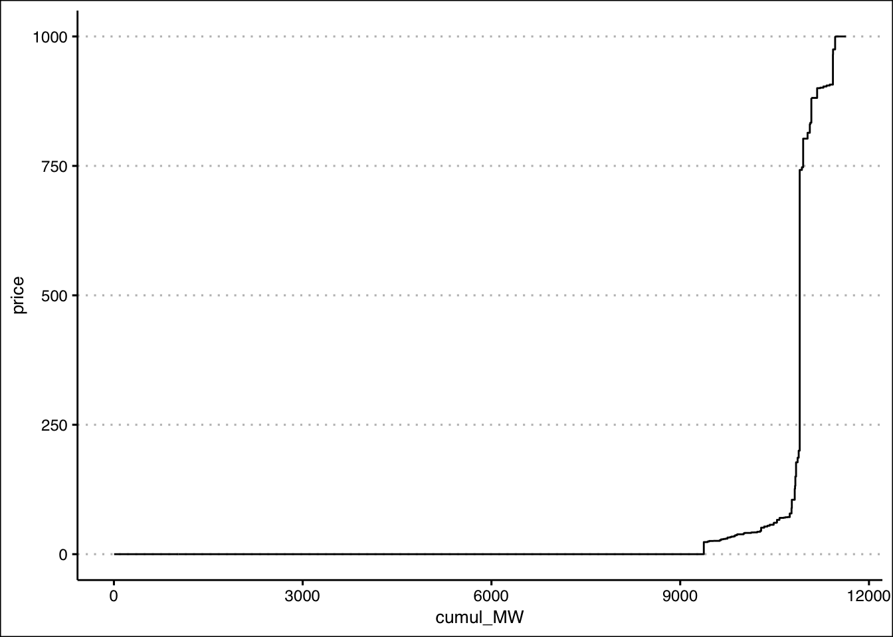

Assignment 1
Hello class!
For your first data assignment, you will do two tasks:
- Analyze pool price data
- Plot the merit order for a selection of hours
You can do this in either a) an rMarkdown script like this (which includes both code and output) or b) using RStudio’s script to write your code in a .r file and save your plots
Task 1: Price data
Start by pulling in 1 year of pool price data, from Jan 1, 2022 to Dec 31, 2022. I’m going to use the API, but you can also pull this using the aeso’s market and system reporting historical pool price report. Up to you!
library(tidyverse)
library(httr)
library(jsonlite)
library(lubridate)
library(ggthemes)
#aeso_key = "enter_your_key_here" (make sure to uncomment and run this line with your key!)
start_date<-as.Date("2022-01-01")
end_date<-as.Date("2022-12-31")
get_AESO_data <- function(start_date,end_date,aeso_key){
data <- GET(url="https://api.aeso.ca/report/v1.1/price/poolPrice",
add_headers("X-API-Key" = aeso_key),
query = list(
startDate = format(start_date, "%Y-%m-%d"),
endDate = format(end_date, "%Y-%m-%d"),
contentType = "application/json"))
data <- as.data.frame(fromJSON(rawToChar(data$content)))
return(data)
}
df <- get_AESO_data(start_date,end_date,aeso_key)
head(df)## timestamp responseCode
## 1 2023-01-30 22:36:33.484+0000 200
## 2 2023-01-30 22:36:33.484+0000 200
## 3 2023-01-30 22:36:33.484+0000 200
## 4 2023-01-30 22:36:33.484+0000 200
## 5 2023-01-30 22:36:33.484+0000 200
## 6 2023-01-30 22:36:33.484+0000 200
## return.Pool.Price.Report.begin_datetime_utc
## 1 2022-01-01 07:00
## 2 2022-01-01 08:00
## 3 2022-01-01 09:00
## 4 2022-01-01 10:00
## 5 2022-01-01 11:00
## 6 2022-01-01 12:00
## return.Pool.Price.Report.begin_datetime_mpt
## 1 2022-01-01 00:00
## 2 2022-01-01 01:00
## 3 2022-01-01 02:00
## 4 2022-01-01 03:00
## 5 2022-01-01 04:00
## 6 2022-01-01 05:00
## return.Pool.Price.Report.pool_price
## 1 65.64
## 2 61.59
## 3 56.67
## 4 45.58
## 5 57.39
## 6 58.11
## return.Pool.Price.Report.forecast_pool_price
## 1 68.22
## 2 63.52
## 3 54.71
## 4 51.36
## 5 59.3
## 6 58.71
## return.Pool.Price.Report.rolling_30day_avg
## 1 127.10
## 2 127.10
## 3 127.11
## 4 127.12
## 5 127.12
## 6 127.12Let’s tidy this up a bit by renaming and keeping only the two columns of data we want: the date and the price:
df <- df %>%
select(datetime=return.Pool.Price.Report.begin_datetime_mpt,
price=return.Pool.Price.Report.pool_price)
head(df)## datetime price
## 1 2022-01-01 00:00 65.64
## 2 2022-01-01 01:00 61.59
## 3 2022-01-01 02:00 56.67
## 4 2022-01-01 03:00 45.58
## 5 2022-01-01 04:00 57.39
## 6 2022-01-01 05:00 58.11str(df)## 'data.frame': 8760 obs. of 2 variables:
## $ datetime: chr "2022-01-01 00:00" "2022-01-01 01:00" "2022-01-01 02:00" "2022-01-01 03:00" ...
## $ price : chr "65.64" "61.59" "56.67" "45.58" ...Before we continue, there’s a problem with these data types. Check out what they are. Are these plottable? Do you see the issue?
Mutate these variables to a datetime
(POSIXct) class using the lubridate
ymd_hm() command and a numeric variable
(as_numeric()). I’ll leave that bit of code to you but if
done correctly you should get the following data classes:
## 'data.frame': 8760 obs. of 2 variables:
## $ datetime: POSIXct, format: "2022-01-01 00:00:00" "2022-01-01 01:00:00" ...
## $ price : num 65.6 61.6 56.7 45.6 57.4 ...Sweet. Let’s make an ugly plot of 8760 hours of prices in 2022…
ggplot(df,aes(x=datetime,y=price))+
geom_point()Ugh. So ugly. Let’s do something more useful…
Now is where I want you to complete Task 1. I want you to produce the following more interesting (and more legible) charts:
- Plot the last 14 days of December 2022 hourly prices
- Plot monthly average prices for 2022 as a column chart, include labels for the prices
- Plot average prices by hour for 2022, i.e. on the x-axis of your plot should be the hours 1 through 24, with the y-axis value being the average price in each hour for 2022). Annotate the highest hourly average price (which hour, what price?).
- Like (c) but this time do the averages and plots separately
by month (hint: check out the
facet_wrapcommand) - Now i want you to go back and pull 3 years of data. Plot the hourly price shape (like in (c)) but for summer months only (June-August; not by month, average over all hours in these months) for 2020, 2021, 2022. Make each year’s summer data be a separate coloured line. How have the hourly price shapes changed?
- Extend plot (e) to deal with the changes in levels from year to year so we can really focus on the hourly shape. Make the y-axis be the price for any given hour divided by the average price in that summer
The following commands will be your friend: * filter
allows you to subset the data * group_by allows you to do
things like monthly averages * summarise allows you to do
some statistical calculations, like averages!
For example
new.df <- df %>% mutate(month=month(datetime) %>% group_by(month) %>% summarise(price=mean(price))
will give you a 12x2 dataframe of months and monthly average prices.
Hand in your Task 1 either as a rMarkdown file (advanced!) or
pasting all the charts you make into a word file, also include your r
code. Bonus points for making your charts look nice. Pretend you’re
publishing them somewhere for public consumption! (hint:
ggthemes offers a nice set of canned themes…)
Task 2: Merit Order data
Now i want you to pull some historical merit order data to plot the supply curve (merit order) for various hours, for various companies, and for various assets.
Let’s start by pulling the data for a random day, let’s go with
2022-08-06 as our day:
get_merit <- function(start_date,end_date,aeso_key){
data <- GET(url="https://api.aeso.ca/report/v1/meritOrder/energy",
add_headers("X-API-Key" = aeso_key),
query = list(
startDate = format(start_date, "%Y-%m-%d"),
endDate = format(end_date, "%Y-%m-%d"),
contentType = "application/json"))
data <- as.data.frame(fromJSON(rawToChar(data$content)))
return(data)
}
start_date <- as.Date("2022-08-06")
end_date <- as.Date("2022-08-06")
meritOrder <- get_merit(start_date,end_date,aeso_key)
meritOrder <- unnest(meritOrder, cols = c(return.data.energy_blocks))
head(meritOrder)## # A tibble: 6 × 16
## timestamp responseCode return.data.beg… return.data.beg… import_or_export
## <fct> <fct> <chr> <chr> <chr>
## 1 2023-02-03 16… 200 2022-08-06 06:00 2022-08-06 00:00 ""
## 2 2023-02-03 16… 200 2022-08-06 06:00 2022-08-06 00:00 ""
## 3 2023-02-03 16… 200 2022-08-06 06:00 2022-08-06 00:00 ""
## 4 2023-02-03 16… 200 2022-08-06 06:00 2022-08-06 00:00 ""
## 5 2023-02-03 16… 200 2022-08-06 06:00 2022-08-06 00:00 ""
## 6 2023-02-03 16… 200 2022-08-06 06:00 2022-08-06 00:00 ""
## # … with 11 more variables: asset_ID <chr>, block_number <int>,
## # block_price <chr>, from_MW <int>, to_MW <int>, block_size <int>,
## # available_MW <int>, `dispatched?` <chr>, dispatched_MW <int>,
## # `flexible?` <chr>, offer_control <chr>Now you should have a dataframe to work with thanks to Mallika’s
smart use of the unnest command.
Let’s clean it up a bit by renaming some variables we will want to work with.
meritOrder <- meritOrder %>%
rename(time=return.data.begin_dateTime_mpt,
MW=available_MW,
price=block_price)
str(meritOrder)## tibble [5,362 × 16] (S3: tbl_df/tbl/data.frame)
## $ timestamp : Factor w/ 1 level "2023-02-03 16:43:38.633+0000": 1 1 1 1 1 1 1 1 1 1 ...
## $ responseCode : Factor w/ 1 level "200": 1 1 1 1 1 1 1 1 1 1 ...
## $ return.data.begin_dateTime_utc: chr [1:5362] "2022-08-06 06:00" "2022-08-06 06:00" "2022-08-06 06:00" "2022-08-06 06:00" ...
## $ time : chr [1:5362] "2022-08-06 00:00" "2022-08-06 00:00" "2022-08-06 00:00" "2022-08-06 00:00" ...
## $ import_or_export : chr [1:5362] "" "" "" "" ...
## $ asset_ID : chr [1:5362] "ME04" "BHL1" "COD1" "ICP1" ...
## $ block_number : int [1:5362] 1 1 1 1 1 1 1 1 1 6 ...
## $ price : chr [1:5362] "999.99" "999.99" "999.99" "999.99" ...
## $ from_MW : int [1:5362] 4 3 3 4 4 18 3 4 4 49 ...
## $ to_MW : int [1:5362] 6 5 5 7 7 21 6 7 8 54 ...
## $ block_size : int [1:5362] 2 2 2 3 3 3 3 3 4 5 ...
## $ MW : int [1:5362] 2 2 2 3 3 3 3 3 4 0 ...
## $ dispatched? : chr [1:5362] "N" "N" "N" "N" ...
## $ dispatched_MW : int [1:5362] 0 0 0 0 0 0 0 0 0 0 ...
## $ flexible? : chr [1:5362] "Y" "Y" "Y" "N" ...
## $ offer_control : chr [1:5362] "URICA Asset Optimization Ltd." "URICA Asset Optimization Ltd." "Signalta Resources Limited" "URICA Asset Optimization Ltd." ...Better. But we have our familiar data class issue. Price is a character. That’s no good! So is our time variable.
I want you to do three things now: 1. Convert price and MW to numeric
variables (remember your mutate). 2. Convert time to a
POSIXct variable (ymd_hm is your friend) 3. Create a new
hour variable using hour function on your time
variable 4. I lied. 4 things. I also want you to filter out
all the imports and exports. They are marked with either an
I or E in the import_or_export
column.
When done, it should look like this:
## tibble [5,250 × 17] (S3: tbl_df/tbl/data.frame)
## $ timestamp : Factor w/ 1 level "2023-02-03 16:43:38.633+0000": 1 1 1 1 1 1 1 1 1 1 ...
## $ responseCode : Factor w/ 1 level "200": 1 1 1 1 1 1 1 1 1 1 ...
## $ return.data.begin_dateTime_utc: chr [1:5250] "2022-08-06 06:00" "2022-08-06 06:00" "2022-08-06 06:00" "2022-08-06 06:00" ...
## $ time : POSIXct[1:5250], format: "2022-08-06 00:00:00" "2022-08-06 00:00:00" ...
## $ import_or_export : chr [1:5250] "" "" "" "" ...
## $ asset_ID : chr [1:5250] "ME04" "BHL1" "COD1" "ICP1" ...
## $ block_number : int [1:5250] 1 1 1 1 1 1 1 1 1 6 ...
## $ price : num [1:5250] 1000 1000 1000 1000 1000 ...
## $ from_MW : int [1:5250] 4 3 3 4 4 18 3 4 4 49 ...
## $ to_MW : int [1:5250] 6 5 5 7 7 21 6 7 8 54 ...
## $ block_size : int [1:5250] 2 2 2 3 3 3 3 3 4 5 ...
## $ MW : num [1:5250] 2 2 2 3 3 3 3 3 4 0 ...
## $ dispatched? : chr [1:5250] "N" "N" "N" "N" ...
## $ dispatched_MW : int [1:5250] 0 0 0 0 0 0 0 0 0 0 ...
## $ flexible? : chr [1:5250] "Y" "Y" "Y" "N" ...
## $ offer_control : chr [1:5250] "URICA Asset Optimization Ltd." "URICA Asset Optimization Ltd." "Signalta Resources Limited" "URICA Asset Optimization Ltd." ...
## $ hour : int [1:5250] 0 0 0 0 0 0 0 0 0 0 ...Good. We can work with this.
Now we are ready to create our cumulative offer curves. I’m going to hide this step because this is where the magic happens. Remember, you’ve got a bunch of rows in your dataframe, each of which are for different offer blocks, of different assets, on potentially different hours.
The trick here is to use 3 steps:
- First, use the
arrangecommand on your dataframe to order the data properly - Second, use the
group_bycommand to create cumulative supply curves by hour - Third, you will need to create a new variable, let’s call it
cumul_MWthat is, no surprise, the cumulative MWs offered in that hour.
Ok, i’ve done that. Once you have, you should be able to plot a merit order for a single hour like this. Let’s choose hour beginning 12:00:
#plot 1 hour
ggplot(meritOrder %>% filter(hour==12), aes(cumul_MW,price))+
geom_step(direction="vh")+
theme_clean()
You might have noticed i used a new plotting command:
geom_step. How very observant of you. Honestly, for this
market merit order i could have just done geom_line and it
would have looked similar to the numerous blocks. But using
geom_step will be more important when we look at individual
assets, where the steps are more chunky. We want these plotted as step
curves, not angled lines connecting points. The
direction="vh" option tells ggplot i want my steps to go
vertical then horizontal (the default is horizontal then vertical, which
we don’t want here)
Now your tasks
Produce the single hourly plot i did above.
Produce a plot with the 24 hours of August 6 as different lines. I suggest using
scale_color_viridis_das your color palette, but that’s up to you. Note: if you just usecolor=hourin your ggplot aesthetics, it will treathourand the colorscale as continuous variables. We don’t want that. We want discrete hours. To make that so, usecolor=factor(hour), which turns the hour variable into 24 discrete values when plotting.Plot just the merit order for a single company, also showing all 24 hours as colored lines. I want you to do this for each of (a) Transalta, (b) Capital Power, and (c) Heartland Generation. You’ll notice they have lots of companies with their names in them. Use them all. To help you, check out the
str_detectfunction… Note: Once you’ve done afilteron just the company you want, you’ll again need to do thearrangegroup_bymutatesteps to create your cumulative MW variables!Plot just the merit order for a single asset, again for all 24 hours. I want you to do this for each of (a) Shepard, (b) Keephills 3, (c) Sheerness 2, and (d) Sundance 6. Same note applies as in (3): you’ll need to recreate your merit orders after filtering on each asset again.
As a freebie, here is my plot for the Sheerness 2 merit order:

That one is a bit hard to read, so I’ll also show it as a faceted
graph using facet_wrap(~factor(hour))

Very nice…
Now it’s your turn. Go forth and plot!